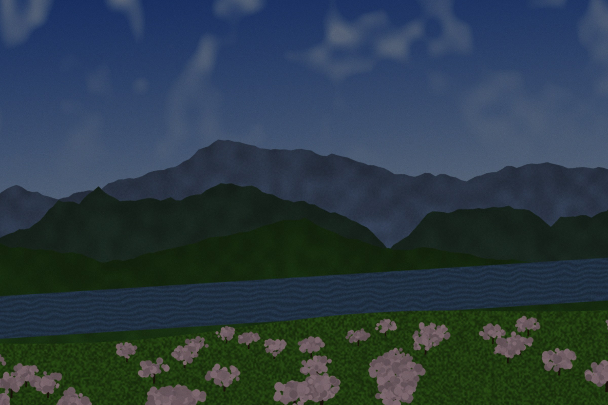
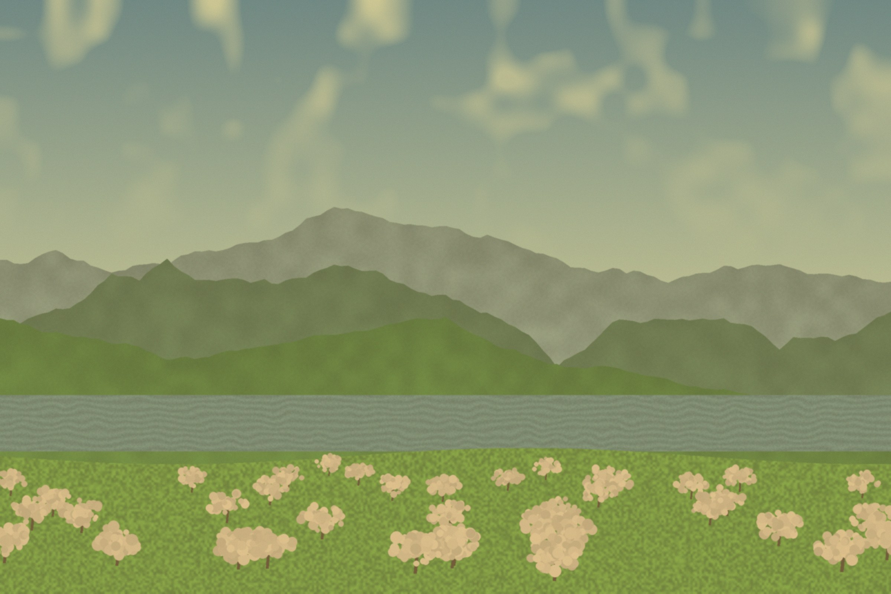
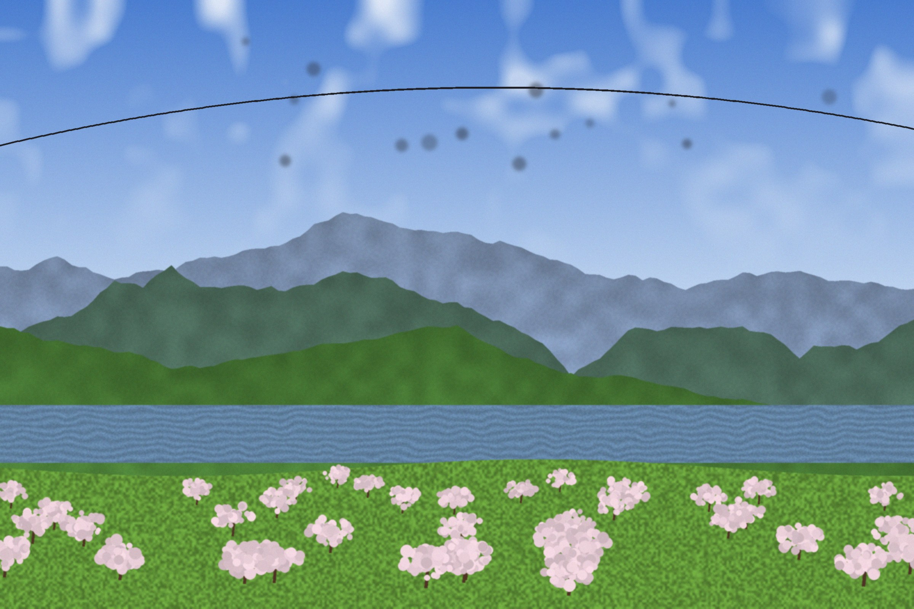
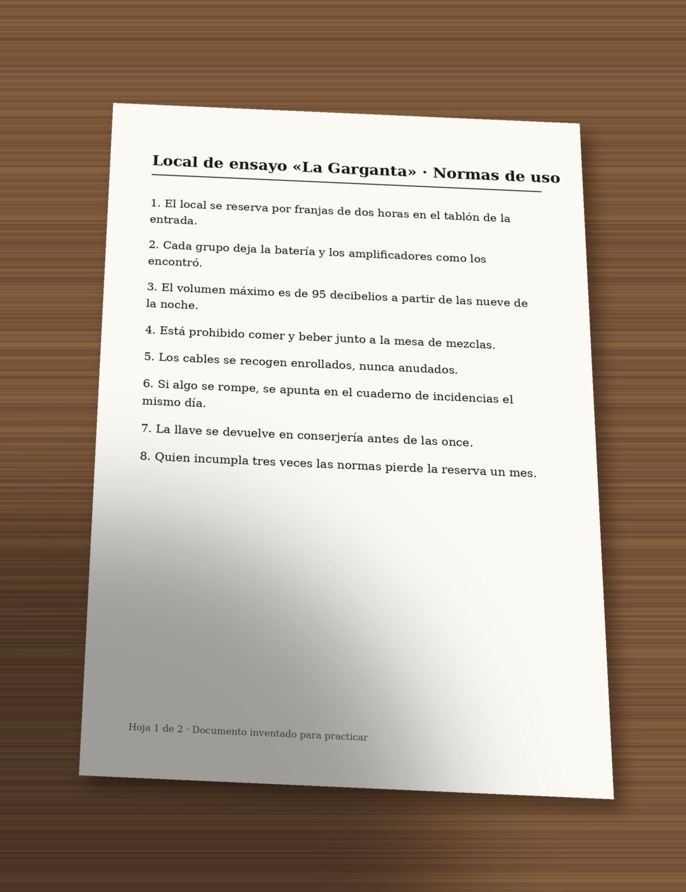

0223 · Aplicaciones ofimáticas · Tema 3 (3 de 6)
Tema 3.3 — Retoque básico en GIMP
Qué se evalúa · RA y criterios
Resultado de aprendizaje
RA5. Manipula imágenes digitales analizando las posibilidades de distintos programas y aplicando técnicas de captura y edición básicas.
Criterios de evaluación que trabaja este subtema:
- c) Se ha trabajado con imágenes a diferentes resoluciones, según su finalidad.
- d) Se han empleado herramientas para la edición de imagen digital.
Fotos para practicar
Son fotos inventadas, generadas para este subtema, cada una con un problema.
Descárgalas (clic derecho > Guardar imagen como) en
Tema3_Proyecto/trabajo/originales. También puedes usar las fotos
de tu proyecto del bloque 3.2.








Enlaces directos: Foto de retoque 1, torcida y oscura · Foto de retoque 2, lavada y amarilla · Foto de retoque 3, manchas y cable · Documento fotografiado, hoja 1.
1. Antes de empezar: el orden del retoque
Los retoques se hacen siempre en el mismo orden. Si enfocas antes de reducir, el enfoque se pierde; si corriges el color antes de recortar, la parte que vas a quitar influye en el ajuste.
| Paso | Qué arreglas | Con qué (GIMP) |
|---|---|---|
| 1 | Enderezar y recortar | Medir, Rotar, Perspectiva, Recortar |
| 2 | Luz: oscura, quemada, sin contraste | Niveles, Curvas, Sombras-Luces |
| 3 | Color: dominantes y saturación | Balance de blancos, Niveles por canal, Tono y saturación |
| 4 | Limpiar: manchas, cables, granos | Saneado y Clonar |
| 5 | Escalar al tamaño de destino | Escalar la imagen, Tamaño de impresión |
| 6 | Enfocar un poco | Máscara de desenfoque |
| 7 | Exportar | Exportar como (subtema 3.5) |
Trabaja sin miedo
- Nunca retoques el original. Abre la foto y guárdala en
seguida como
.xcfentrabajo. El JPG original no se toca. - Duplica la capa antes de empezar
(
Capa > Duplicar capa, Mayús+Ctrl+D). Retoca la copia; con el ojo de la capa de arriba ves el antes y el después. - Deshacer: Ctrl+Z y
Ctrl+Y. En
Editar > Historial de deshacerpuedes volver a cualquier paso. - Vista dividida: casi todos los ajustes de los menús
ColoresyFiltrostienen esa casilla abajo. Muestra la mitad de la imagen sin el ajuste y la otra mitad con él.
Los nombres de los menús son los de GIMP 3 en español. Si en tu ordenador hay una versión anterior, alguno puede cambiar ligeramente.
2. Enderezar, recortar y corregir la perspectiva
Enderezar el horizonte
- Elige la herramienta Medir (Mayús+M).
- Haz clic en un extremo de algo que debería ser horizontal (la orilla del embalse, una mesa, el suelo) y arrastra hasta el otro extremo. Abajo, en la barra de estado, ves el ángulo.
- En las opciones de la herramienta, pulsa Enderezar. GIMP gira la imagen para que esa línea quede horizontal.
Si sabes el ángulo, también puedes usar Rotar (Mayús+R) y escribirlo. Al girar quedan esquinas vacías (transparentes): se quitan recortando.
Recortar
Herramienta Recortar (Mayús+C). Dibuja el rectángulo, ajústalo por los bordes y pulsa Intro. En sus opciones:
- Fijo: Relación de aspecto y escribe la proporción del
destino:
1:1para un post cuadrado,16:9para una miniatura de YouTube,3:2para una foto de 10 × 15 cm. - Guías: Regla de los tercios. Divide el recuadro en 3 × 3. Si colocas lo importante en una de las líneas o en un cruce, la foto queda más equilibrada que con todo en el centro.
- Deja marcada la casilla de borrar los píxeles recortados: si no, GIMP solo los oculta y siguen en el archivo.
Corregir la perspectiva de un documento
Cuando fotografías una hoja desde un lado, sale como un trapecio. La herramienta Perspectiva (Mayús+P) la vuelve a dejar rectangular:
- En las opciones, pon Dirección: Correctiva (hacia atrás).
- Haz clic en la imagen y arrastra las cuatro esquinas del marco hasta las cuatro esquinas de la hoja.
- Pulsa Transformar. La hoja queda recta; recorta lo que sobra de mesa.
Es lo mismo que hacía la aplicación de escaneo del móvil en el subtema 3.2, pero a mano.
3. Tamaño y resolución según el destino
Una misma foto acaba en sitios distintos y cada uno pide unos píxeles. Hay tres órdenes de GIMP que se confunden mucho:
| Orden | Qué cambia | Cuándo usarla |
|---|---|---|
Imagen > Escalar la imagen | Los píxeles: la imagen entera se hace más grande o más pequeña | Para dejarla del tamaño del destino (1280 × 720, 1080 × 1080…) |
Imagen > Tamaño de impresión | Solo los ppp y los centímetros. Los píxeles no cambian | Para decir a qué tamaño se imprimirá |
Imagen > Tamaño del lienzo | El marco: añade o quita espacio alrededor, sin estirar la foto | Para poner márgenes o hacer cuadrada una imagen sin recortarla |
Escalar bien
- Deja la cadena entre anchura y altura cerrada: si no, la imagen se deforma.
- Primero recorta a la proporción del destino y luego escala. Si escalas una foto 3:2 a 1280 × 720 sin recortar, o se deforma o no llega.
- En Calidad > Interpolación, para reducir va bien NoHalo o Cúbica.
- Reducir es seguro; ampliar, no. Al ampliar, GIMP se inventa los píxeles nuevos y la foto se ve blanda. Si una foto no llega a los píxeles que pide el destino, lo correcto es buscar otra o usarla más pequeña.
| Destino | Proporción para recortar | Píxeles finales | ppp |
|---|---|---|---|
| Post cuadrado en redes | 1:1 | 1080 × 1080 | Dan igual |
| Miniatura de YouTube | 16:9 | 1280 × 720 | Dan igual |
| Foto impresa de 15 × 10 cm | 3:2 | 1772 × 1181 | 300 |
| Portada de tu proyecto | 1:1 | 3000 × 3000 | 300 |
4. La luz: histograma, niveles y curvas
Leer el histograma
El histograma (Ventanas > Diálogos empotrables > Histograma)
cuenta cuántos píxeles hay de cada luminosidad, de negro (izquierda) a blanco
(derecha). Sin mirar la foto, ya dice qué le pasa:
| Forma del histograma | Qué le pasa a la foto | Arreglo |
|---|---|---|
| Todo amontonado a la izquierda; la derecha vacía | Oscura (subexpuesta) | Niveles: el punto blanco hacia dentro |
| Todo en el centro; los dos extremos vacíos | Lavada, sin contraste | Niveles: los puntos negro y blanco hacia dentro |
| Pegado a la derecha, con un pico en el borde | Quemada: hay zonas blancas sin detalle | Se puede oscurecer, pero lo quemado no se recupera |
| Repartido de un extremo a otro | Bien expuesta | Poco o nada |
Niveles
Colores > Niveles es el ajuste más útil. Arriba ves el
histograma y debajo tres triángulos en los niveles de entrada:
- Negro (izquierda): llévalo hasta donde empieza el histograma. Ese gris pasará a ser negro puro.
- Blanco (derecha): llévalo hasta donde acaba. Ese gris pasará a ser blanco puro.
- Gris (centro, la gamma): mueve los tonos medios. Hacia la izquierda aclara y hacia la derecha oscurece, sin tocar el negro ni el blanco.
El botón Automático lo hace solo, canal por canal. Funciona bien a menudo, pero mira siempre el resultado.
Curvas, Sombras-Luces y Brillo-contraste
Colores > Curvas: una línea que puedes doblar. Una «S» suave (bajar un poco las sombras y subir un poco las luces) da contraste. Subir el centro de la línea aclara los medios.Colores > Sombras-Luces: aclara solo las sombras u oscurece solo las luces. Ideal para un contraluz (cara oscura con el cielo detrás).Colores > Brillo y contraste: rápido, pero mueve todos los tonos a la vez y quema con facilidad. Mejor Niveles o Curvas.
5. El color: dominantes y saturación
Una dominante es un tono que lo tiñe todo: amarillo con bombillas antiguas, azul en la sombra o en días nublados, verde con algunos fluorescentes. Se nota en lo que debería ser blanco o gris (una pared, una nube, un papel).
Colores > Automático > Balance de blancos: lo intenta solo. Rápido, pero a veces exagera.- Niveles por canal: en
Colores > Niveles, cambia el Canal a Rojo, Verde o Azul y ajusta cada uno por separado. En una foto amarillenta, el canal azul es el que está más apretado. - Cuentagotas gris de Niveles: haz clic en algo de la foto que debería ser gris neutro y GIMP quita la dominante.
Colores > Temperatura del color: hace la foto más cálida (amarilla) o más fría (azul).Colores > Tono y saturación: la saturación es la intensidad del color. Súbela poco: con +15 ya se nota, y con mucho más la piel se vuelve naranja y el cielo, fosforito.- Blanco y negro:
Colores > Desaturar > Desaturar. Para que el resultado se parezca a lo que ve el ojo, elige el modo Luminancia.
6. Limpiar: Saneado y Clonar
Las dos herramientas copian píxeles de una zona buena y los pintan encima de lo que quieres quitar. Se usan igual: Ctrl+clic para elegir el origen (de dónde se copia) y luego pintas sobre el defecto.
| Herramienta | Qué hace | Para qué |
|---|---|---|
| Saneado (H) | Copia la textura del origen y la funde con la luz y el color de alrededor | Motas de polvo, granos, pequeñas manchas |
| Clonar (C) | Copia el origen tal cual, sin mezclar | Quitar objetos grandes o con bordes (un cable, una papelera, un letrero) |
- Tamaño del pincel: un poco más grande que el defecto. Se cambia con [ y ].
- Cambia el origen a menudo. Si clonas siempre del mismo sitio se ven trozos repetidos.
- Coge el origen de una zona con la misma luz y la misma textura: para quitar un cable del cielo, cielo de justo al lado.
- Haz pinceladas cortas y mira el resultado con la imagen al 100 % (1).
Otros dos arreglos de Filtros > Realzar: Eliminar ojos
rojos (selecciona antes los ojos) y Reducción de ruido
(para fotos con grano hechas con poca luz).
7. Enfocar, al final
Filtros > Realzar > Enfocar (máscara de desenfoque) sube el
contraste en los bordes y la foto parece más nítida.
- Se aplica después de escalar, al tamaño final: al reducir, una parte del enfoque se pierde.
- Poco: si ves un halo claro alrededor de los bordes, te has pasado.
- Enfocar no arregla una foto movida o desenfocada. El detalle que no se captó no aparece.
8. Prácticas del subtema
Acreditan los criterios c (resolución según la finalidad) y
d (herramientas de edición). Entrega en cada una el .xcf
y un documento de Word con capturas del antes y el después y
los valores que has usado.
- P3.3.1 · Enderezar, recortar y perspectiva. (1) Endereza la foto 1 con la herramienta Medir y apunta el ángulo. Recorta para que no quede ninguna esquina vacía y anota los píxeles finales. (2) Corrige la perspectiva de la foto 4 (documento), recorta la mesa y escala la hoja a 1240 × 1754 píxeles (un A4 a 150 ppp).
- P3.3.2 · Luz y color. Arregla con Niveles la foto 1 ya enderezada y quita la dominante de la foto 2. En cada una, haz una captura del histograma antes y después, y explica en dos líneas qué triángulos has movido y por qué.
- P3.3.3 · Limpiar. En la foto 3, quita todas las motas con Saneado y el cable con Clonar. Después, enfoca un poco. Haz una captura ampliando una zona donde estaba el cable, antes y después.
- P3.3.4 · Una foto, cuatro destinos. Con la foto 1 ya retocada, prepara las cuatro versiones de la tabla del apartado 3: post de 1080 × 1080, miniatura de 1280 × 720, foto impresa de 15 × 10 cm a 300 ppp y portada de 3000 × 3000 a 300 ppp. Para cada una, apunta la proporción a la que recortas y los píxeles que te quedan antes de escalar. Una de las cuatro no se puede hacer bien: di cuál, por qué y qué harías.
9. Comprueba lo que has entendido
Ocho preguntas. No cuenta para la nota: es para que veas si puedes seguir.